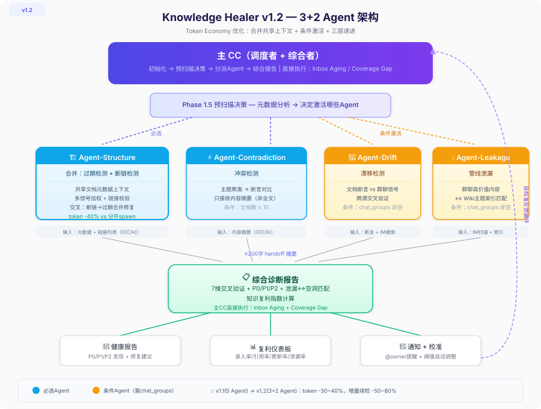
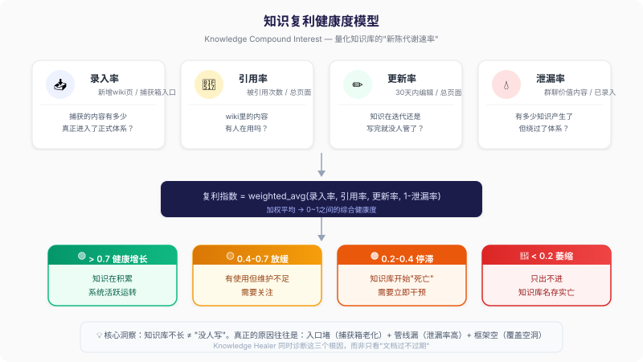

照着走一遍，被财务打回来。主管说"哦那个早改了，直接提交就行"。 这不是个案。
调研显示 70% 以上企业知识库"几乎无人用或仅勉强有人用"。 根本原因很简单：写一篇文档是一次性成本，人们愿意付； 维护一篇文档是持续成本，没人愿意管。
Knowledge Healer 做一件事：让机器替你检查，你只管修。
Knowledge Healer 不是简单的"90 天没改就标红"——会议纪要三年不更新也正常， 入职指南 30 天没改可能就出问题了。系统按文档类型区分有效期， 多信号加权判定。
关键创新是最后那一维——跨源交叉验证。 文档没改，但群里有人说"我们现在不这么做了"，这是纯文档检查工具做不到的。

架构上用 3+2 并行：3 个诊断 Agent（结构/内容/使用）分头扫描， 2 个验证 Agent（跨源/优先级）后置判定。这套思路直接来自我同期做的 Multi-Agent Research 框架—— 理论沉淀 → 工程落地 → 第三方认证的完整闭环。
每个文档最终得到一个 0-100 的健康分和一份具体修复建议清单。 不是"你的知识库不行"，是"这 12 条 30 分钟可以修完"。
2026 年 5 月 13 日，字节跳动 larksuite 官方公布入选名单。 knowledge-healer 与 lark-survey-scoreboard 双双入选， 将收录至 larksuite 官方开源库附作者署名。
做 knowledge-healer 之前，我做了 13 天的 Multi-Agent Research—— 在没有真实用户的情况下，跑 47 轮控制实验，沉淀方法论。 那时候 Claude 跟我说："你这是研究型作品，不是产品， 面试官会问'你的用户是谁'，你答不上来。"
做完 knowledge-healer 我答得上来了： 用户是任何一个被过期文档坑过的团队。 但更重要的是——理论 → 工程 → 验证这条闭环， 让我第一次理解"产品"和"研究"不是对立的。 它们是同一件事的两个阶段。
飞书十佳给我的不是奖金（没有），是外部世界第一次告诉我："你做的东西，有人要"。 在那之前，我所有的作品只有一个用户——我自己。
